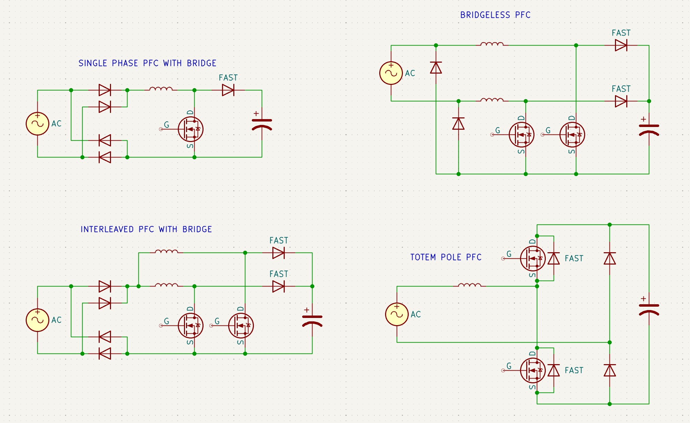
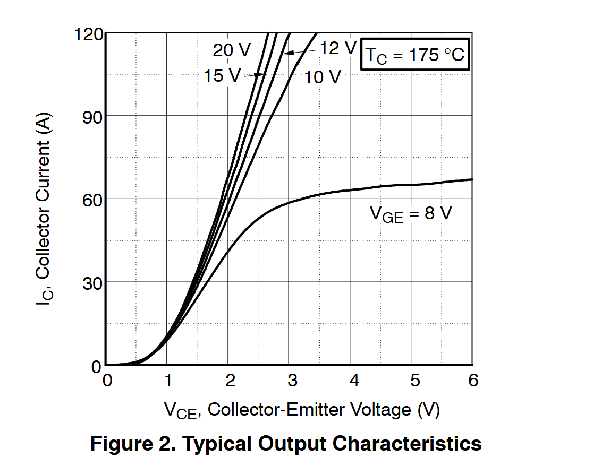

Lucas Wills | LinkedIn: lucas-wills | Email: lucasbwills@gmail.com | Discord: lucas_ww
2kW Supply
2kW Phase-Shifted Full-Bridge Power Supply with PFC and Adjustable Output
2026
Background
It's summer of 2026 and it's been a little while since I've done a challenging power electronics project, so let's do one!
In 2023, I built a big adjustable power supply using a two-switch forward topology. It was able to reach 1.5kW or so, and was adjustable from 3V to 80V. However, it was not very cleanly made, got fairly hot and didn't have any output current control. It also lacked any power factor correction. So, I've decided for this project I'm going to build a new big power supply and do it all myself, aiming for voltage and current control from 5V to 80V and up to 50A, with a maximum power of 2kW. I want to be able to set both output voltage and current limits, although I consider stable voltage control to be more important. Finally, it needs to have power factor correction for efficient operation at kilowatt power levels.
PFC Design
Before we can start any designing, we need to decide on a topology for both the active PFC and the DC-DC converter sections of the power supply.
A number of PFC boost converter topologies are popular and well documented. Simplified diagrams of some of the most common are shown below.

A single-phase boost converter powered through a bridge rectifier is the simplest approach, and probably the most widely used. It requires only a single low-side switch and ac voltage can be sensed easily, making control very simple.
The interleaved, or multiphase boost converter works identically to the single-phase version but uses two switches operated 180° out of phase. This results in the inductor ripple currents being somewhat cancelled out, so the output capacitor sees less ripple current. Additionally, the current is split between 2 sets of inductors, switches and diodes, so each sees a much lower current. The downside here is a higher component count and increased size and complexity.
Both of these options have the issue of power dissipation in the bridge rectifier diodes. These losses can be cut in half using 2 rectifier diodes instead of 4, and using a separate boost converter for the positive and negative cycles. This gives us the bridgeless PFC.
Conduction losses can be further reduced by replacing the high speed diodes with synchronous rectifiers. This can be aranged into a totem pole topology, in which only 2 switches are needed and each half of the AC cycle switches which one is the synchronous rectifier. This is the totem pole topology. This has very high efficiency and relatively low component count, with the downside of requiring a high-side gate drive for the upper switch, as well as a significant increase in driver complexity. It can be further improved by replacing the 2 remaining slow rectifier diodes with additional switches, at the cost of further complexity.
For this project, I'm more interested in reducing complexity and component count than maximizing efficiency. For this reason, I chose the simplest active PFC topology, the single-phase boost converter with a full-bridge rectifier. There are dozens of suitable control chips for this topology, I chose the UCC28180 chip from TI, as it is quite well documented and allows everything to be compacted into a single 8-pin chip.
The UCC28180 chip has a programmable operating frequency. To allow for the use of an inexpensive IGBT as a switching device, I chose a low frequency around 50kHz. The downside of this decision is that we will need a higher inductance to keep down the ripple current.
As such, the switching device was selected. We can calculate that in the worst case our switch will see ~26 amps based on the output power and voltage gain. Giving a 50% safety margin, we need a switch capable of handling 39A. The output of the boost converter will be around 390V, so we will use >600V rated devices. Additionally, switching times, especially turn-off time should be minimal to reduce overlap losses associated with hard-switching.
The device chosen was FGH40T65SHDF from Onsemi. It is rated for 650V and 40A at 175°C, and has incredibly fast switching for an IGBT. The input capacitance of roughly 2nF should not be an issue to switch at 50kHz. The reverse transfer capacitance is quite low at 25pF, so we shouldn't have issues turning the IGBT off.
Taking a look at the IC vs. VCE curve, we can see that, at 40A, there is little improvement of VCE beyond 12V on the gate. To facilitate slightly faster rise times, we will use 15V gate drive.

Next, for the diode I selected MSC050SDA070B from Microchip Technology. It is a 700V Silicon Carbide schottky diode, rated for 39A at 135°C. SiC schottky diodes are well suited for this because the reverse recovery time of a normal diode would result in a small shoot-through and thus additional power dissipation in the IGBT. This becomes a greater issue when switching times are faster and therefor a higher dV/dt occurs on the switching node. Additionally, the schottky diode will have a lower forward voltage drop and therefore lower conduction losses than a fast recovery diode. In this case, the low switching frequency means an ordinary fast-recovery rectifier would still be suitable, but the schottky diode will be superior.
Next for the inductor, we need an inductor around 180μH with a saturation current over 25A. At first I looked into using ferrite E-cores due to their high inductance for a given size and number of turns, which would save on space and wire. Gapped ferrite cores must be used to get a higher saturation current. I looked at a few core options, lets look at a 55x55x21mm E-core pair with a 2mm gap, TDK's B66335G2000X187 & B66335G0000X187. This is a decently large ferrite and not exactly cheap. The datasheet specifies an effective permeability of μe = 81, an effective path length of le = 0.124m and an inductance factor of AL = 292nH/T2. From the AL we can calculate that 25 turns will give us around 182μH. Then we can calculate the magnetic field strength at 25A, H = 25A * 25 turns / 0.124m = 5040 A/m. Finally, we can calculate flux density, B = 5040 A/m * 81 * 1.26*10-7 T*m/A = 0.66 Tesla. This is roughly double the saturation flux density of N87 ferrite, so this core is certainly not suitable.
Switching to a larger ferrite would quickly get unreasonably expensive for a personal project, but fortunately we don't have to use ferrite. Instead, lets switch to looking at iron powder cores, which have a saturation flux density 3-5 times higher and have a much more gentle reduction of inductance as saturation is approached. The downside of using an iron powder core is that we will need many more turns to get the same inductance.
I already have a small selection of iron powder cores, including two Micrometals T157-8/90 cores. These cores are made from iron powder material -8, which has a quite high saturation flux density of 1.76T, relatively low loss at high frequency and a medium permeability of μe = 35. We can calculate flux density the same way. The datasheet does not specify an effective path length, so we will use the logarithmic mean radius formula to estimate it. OD = 40mm and ID = 24mm, so le = π(0.040 - 0.024) / ln(0.040 / 0.024) = 0.0984m. The inductance factor given is AL = 42nH/T2, stacking 2 cores will simply double the AL giving us 84nH/T2. So, we can use 46 turns to get around 178μH. The magnetic field strength will therefore be H = 25A * 46 turns / 0.0984m = 11700 A/m. Then for the flux density, we get B = 11700 A/m * 35 * 1.26*10-7 T*m/A = 0.51 Tesla. This is less than a third of the saturation flux density of iron powder -8, so we can be confident that this will work with a good bit of safety margin. So, our inductor will be constructed from 46 turns of suitable wire on 2 stacked T157-8/90 cores.
The total output capacitance of the PFC boost converter will be determined later when we figure out how much bulk capacitance is needed for the DC-DC converter. Other than that are mostly small details for the PFC circuit. The IGBT will be driven by a UCC27624DGNR gate driver in a HVSSOP package, which will provide plenty of current sourcing and sinking power to quickly switch the IGBT. The UCC28180 is capable of directly driving a decently sized gate, but the UCC27624 is faster and has more than twice the current pulse capability.
DC-DC Converter Design